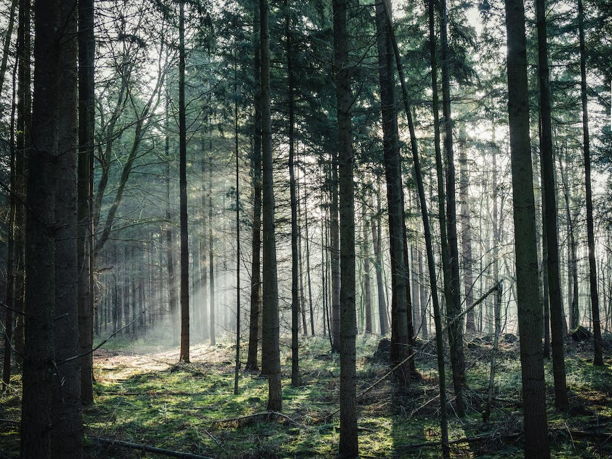
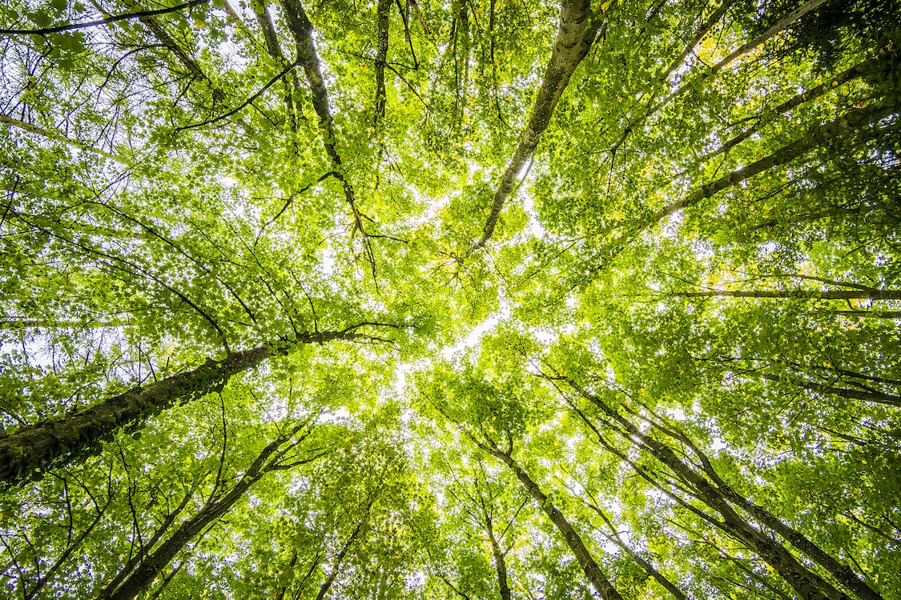
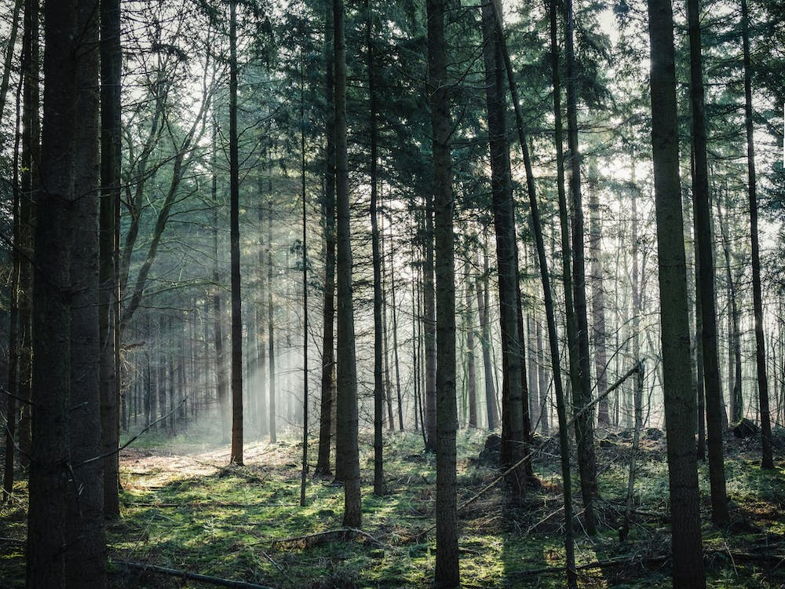
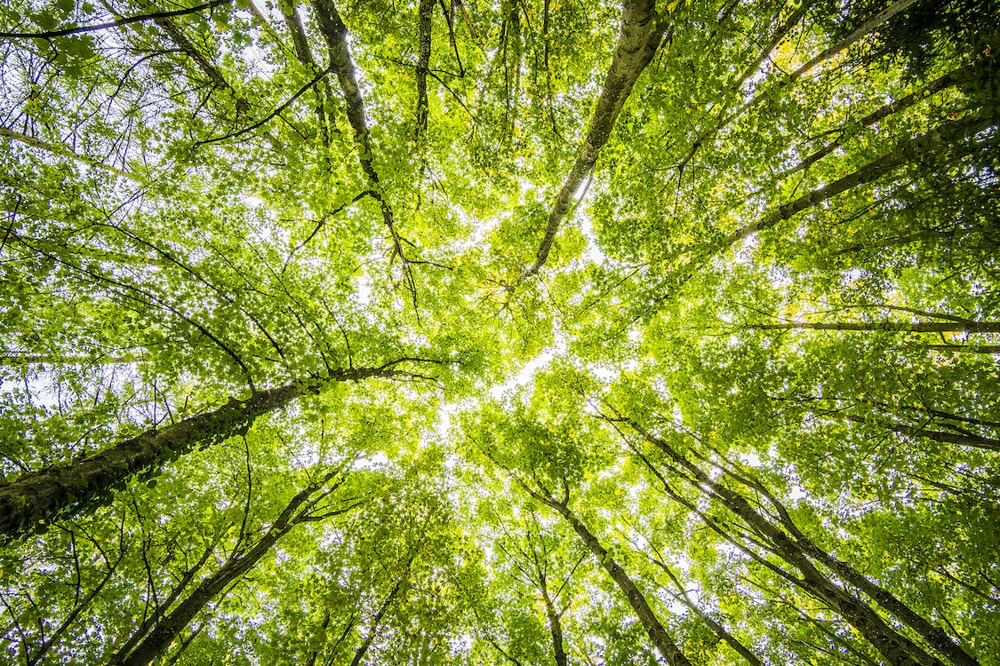

Моє дозвілля
Я дуже люблю відпочивати,коли поряд друзі.За один день хочеться виконати все,що собі було задумано,максимально і з користю використати кожну хвилину.Але для цього необхідний гарний настрій,натхнення.Не можна однозначно сказати, що постійно свій вільний час я витрачаю на туристичні походи з друзями,чи сиджу в Інтернеті.Кожний раз все буває по-різному.
 


